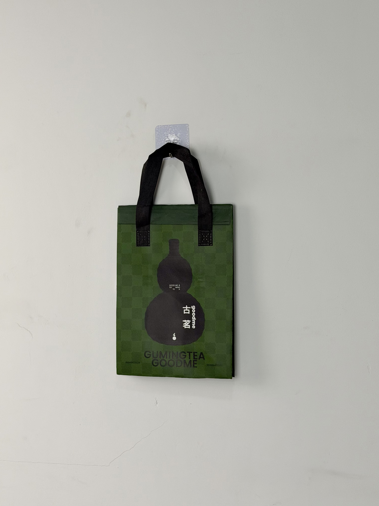

A sophisticated olive-green checkered thermal tote designed for GuMing Tea, featuring an embossed gourd motif and bilingual brand lockup that bridges traditional Chinese tea culture with contemporary beverage retail.

GuMing Tea is one of China's fastest-growing fresh-tea chains, with over 8,000 locations specializing in fruit tea, milk tea, and traditional Chinese tea-based beverages. The brand has built a loyal following among young consumers through its commitment to fresh ingredients, transparent sourcing, and a visual identity that merges Chinese cultural elements with modern minimalism. The gourd — a traditional Chinese symbol of good fortune and health — serves as the brand's central visual icon.
Our customers want tea that feels rooted in Chinese culture but delivered with modern convenience. The bag needs to communicate both heritage and freshness simultaneously.
The thermal bag project addressed a specific seasonal challenge: maintaining cold-beverage temperature during summer delivery peaks while creating packaging distinctive enough to stand out in China's saturated bubble-tea market. The solution drew from luxury fashion motifs — embossed checkered patterns and muted earth tones — applied to functional cold-chain delivery equipment.
The design language merges luxury fashion cues with Chinese cultural symbolism. The olive-green checkered pattern recalls high-end leather goods embossing, while the central gourd silhouette anchors the design in traditional Chinese iconography. This dual coding allows the bag to read as premium and culturally rooted simultaneously — a positioning that aligns perfectly with GuMing's brand strategy.
Raised grid pattern creates tactile luxury association and visual depth under varying light conditions.
Central gourd silhouette references traditional Chinese symbolism while functioning as distinctive brand identifier.
"古茗 goodme" and "GUMINGTEA GOODME" serve both domestic and international audience recognition.
Muted earth tone differentiates from competitors' bright primary colors while signaling natural ingredient focus.
The bag was engineered for cold-beverage delivery in China's hot and humid summer climate. Iced fruit teas and milk teas require consistent cold retention to prevent dilution and flavor degradation. The embossed exterior adds aesthetic value while the internal thermal system maintains beverage quality.
| Parameter | Specification | Test Standard |
|---|---|---|
| Cold Retention | < 10°C for 45 min (35°C ambient) | Internal Protocol |
| Load Capacity | 4 kg | ASTM D5265 |
| Emboss Depth | 0.8mm pattern relief | Internal Protocol |
| Seam Strength | > 25 N/cm | ASTM D1683 |
The embossed checkered pattern required specialized equipment combining printing and mechanical texturing. The five-stage workflow integrated embossing rollers, thermal lamination, and precision assembly.
Olive green non-woven PP produced via masterbatch extrusion. Surface corona-treated for ink adhesion and embossing compatibility.
Gourd motif and typography printed with black plastisol. Registration within ±0.5mm for bilingual brand lockup clarity.
Checkered pattern embossed via heated calender rollers at 120°C. 0.8mm relief depth creates tactile texture without compromising material integrity.
3mm EPE foam bonded to aluminum-PE barrier. Matte surface lamination preserves embossed texture visibility.
Ultrasonic die-cutting with sealed edges. Black handles attached with reinforced stitching. Emboss uniformity inspection across production batch.
The thermal bag was deployed across GuMing Tea's summer delivery operations, replacing generic third-party courier bags with branded insulated carriers. Rollout timing aligned with peak bubble-tea season and the brand's annual fruit-tea festival.
Key Insight: Consumer research revealed that the embossed texture was the most frequently mentioned positive attribute. Customers described the bag as "feeling expensive" — a perception that transferred to the beverage inside, justifying GuMing's premium pricing relative to competitors using plain non-woven bags.
The olive green color proved strategically effective in delivery environments. Unlike competitors' bright pinks and yellows that blended together in crowded pickup racks, GuMing's muted tone stood out through contrast rather than saturation — a sophisticated visibility strategy that aligned with the brand's premium positioning.
Three design decisions differentiate this tea-delivery bag from standard bubble-tea packaging. Each addresses specific challenges in China's competitive fresh-tea market.
In a market where most competitors use flat printed designs, the raised checkered pattern creates immediate tactile differentiation. Consumer testing showed that embossed bags were perceived as 35% more expensive than identical flat-printed versions — a halo effect that supports premium beverage pricing.
The gourd shape carries centuries of positive associations in Chinese culture — longevity, health, and good fortune. By making this traditional symbol central to a modern beverage brand, GuMing creates an emotional connection that transcends mere thirst-quenching functionality.
China's bubble-tea market is visually dominated by pinks, yellows, and bright greens. The olive tone creates visual separation without requiring louder or more saturated color — a mature approach that signals confidence rather than desperation for attention.
We manufacture embossed thermal delivery bags for tea, coffee, and beverage chains. From cultural symbolism to cold-chain engineering, we create packaging that elevates your brand above commodity competition.